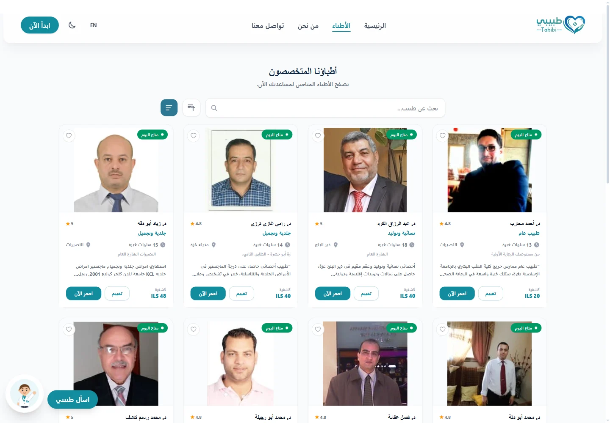

Team project · Live product demo
Tabibi
An Arabic-first healthcare interface that keeps discovery, comparison, and the next booking action in view.

Context
Tabibi is a health-services web platform built as a team project during a practical-training program. The public experience helps people browse doctors, understand essential professional information, and move toward booking.
The interface shown here is not a reconstructed portfolio mockup. It is a capture of the running Arabic/RTL product, including its public doctor listings and demo content.
Responsibility boundary
I served as Co-Technical Lead and worked primarily on frontend implementation. My contributions also included API endpoints, business logic, and database-schema work.
- Translate product screens into responsive frontend interfaces.
- Connect interface behavior with application data and API behavior.
- Contribute to selected server-side endpoints, business logic, and schema decisions.
I did not build the entire platform independently. Other team members contributed to the product, and this case study does not assign every visual or product decision to me.
Reading the interface
The public doctors page demonstrates several useful product decisions. These are observations about the implemented interface, not claims of measured user outcomes.
Discovery controls stay close to results
Search and specialty controls sit directly above the listings, keeping the relationship between refining a query and seeing results spatially clear.
Repeated cards support comparison
Each card uses a consistent information sequence for specialty, experience, location, price, and availability. Repetition reduces the work of comparing one doctor with another.
The primary action remains explicit
A dedicated booking button appears within every result rather than hiding the next step inside a secondary menu.
Implementation notes
The technology stack combines a React frontend with C#/.NET services and PostgreSQL. Working across those boundaries gave the frontend work a practical connection to data shape, API behavior, and application logic.
- React
- C#
- .NET
- PostgreSQL
The important lesson for my practice is the value of understanding both sides of an interface contract: what the screen needs to communicate, and what the underlying system can reliably provide.
Current limits & next steps
The live demo is available, but this portfolio does not claim adoption, traffic, revenue, or performance outcomes. Earlier large-volume figures associated with testing referred to simulated data, not real patient activity.
No user-research or usability-testing results are claimed here. A future iteration should document additional implemented views, responsive behavior, loading and error states, and verified accessibility findings.